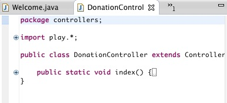
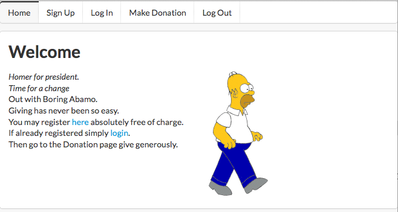
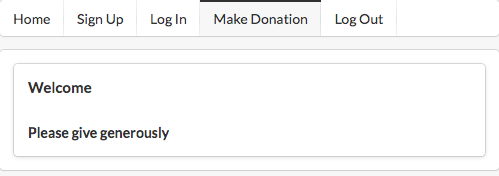
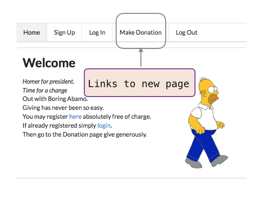

Step-by-step guide to building Donation application.
Here is a summary of the first iteration:
Summary v0 features
A user may register (sign on) and log in (sign in).
Having signed on, a user's details are stored in a database.
So far, we have used the embedded Play database.
Later we will deploy the application and use a remote database.
We have replaced the default css by Semantic UI css.
A log out (sign out) facility has been provided.
Features of iteration v1
Welcome
Sign on
Log in
Blank donation page with routing
Log out
Note that we are not yet introducing a second model class.
A model class will be required for donations but in this iteration we are simply using a placeholder view template.
DonationController

Addd the following file to the controllers package:
Filename: donationController.java
package controllers;
import play.*;
import play.mvc.*;
public class DonationController extends Controller
{
public static void index()
{
Logger.info("About to donate");
render();
}
}Update navigation bar
It is necessary to modify the navigation bar to facilitate access to the new donation page that we are about to introduce. Here is the addition:
<a class="ui item" href="/donation">Make Donation</a>The updated navigation code block should be placed in all the view tempates, namely:
Here is the latest navigation bar. Notice that the link to the donation page has been included and that it has the active attribute.
<nav class="ui menu">
<a class="ui item" href="/">Home</a>
<a class="ui item" href="/signup">Sign Up</a>
<a class="ui item" href="/login">Log In</a>
<a class="ui active item" href="/donation">Make Donation</a>
<a class="ui item" href="/logout">Log Out</a>
</nav>Donation view
Create a folder DonationController in the views folder and add a corresponding view template, index.html.
DonationController folder: index.html
#{extends 'main.html' /} #{set title:'Donation Request' /}
<nav class="ui menu">
<a class="ui item" href="/">Home</a>
<a class="ui item" href="/signup">Sign Up</a>
<a class="ui item" href="/login">Log In</a>
<a class="ui active item" href="/donation">Make Donation</a>
<a class="ui item" href="/logout">Log Out</a>
</nav>
<section class="ui segment">
<p><h4>Welcome</h4></p>
<p><h5>Please give generously</h5></p>
</section>Modify routes
Add the following to the routes file immediately following the Accounts page block but before the Map static resources...:
# Donation page
GET /donation DonationController.indexTest run
Run the application, open in a browser and welcome the next president:

Navigate to the donation page (click on Make Donation) and you should see:

Test the iteration by executing play run and exercising the various navigation tabs.

Commit this iteration to your donation repository, add a tag and push all to remote repo.
git add .
git commit -m 'iteration v1'
git tag -a v1 -m 'iteration v1'
git push && git push --tags